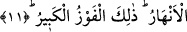

11. İman edip sâlih ameller işleyenlere ise, zemininden ırmaklar akan cennetler
vardır. İşte büyük kurtuluş budur.
Azap görenlerden ve başkalarından “îman edip sâlih amel işleyenlere ise” zikredilen
îmanları ve kâfirlerin eziyetlerine; yakmalarına sabretmeleri dâhil olmak üzere, sâlih
amel işlemeleri sebebiyle “zemininden ırmaklar akan cennetler vardır.” Onlar bu
cennetleri ateşte yakılmak ve benzeri gibi işkencelere uğramaları nedeniyle mükâfat
olarak alacaklardır. Böylece onlar ateşte yakılmanın karşılığı olarak bu işâret edilen
mükâfatla mükâfatlandırılacaklardır.
İrşad’da deniyor ki: Âyette yer alan “cennât/cennetler” kelimesiyle şâyet “ağaçlar”
kasdediliyorsa onların altından nehirlerin akmasının ne anlama geleceği gâyet açık olur.
Ama bununla ağaçları da içine alan toprak parçası kasdediliyorsa o zaman alttan akma
nehirlerin açıktan akması itibariyledir. Çünkü Cennetin ağaçları altlarını, diplerini
örtecektir. Nitekim bu bahçelere ağaçların zeminlerini örtmesinden dolayı Cennet
denmiştir.
“İşte” karşısında dünyanın ve içinde bulunan her türlü çeşit çeşit istek duyulan
şeylerin tümüyle küçük kaldığı “büyük kurtuluş budur.” Zikredilen şanı yüce cennetleri
elde etmekdir. Âyetin metnindeki “hasr” izâfîdir (görecedir).
Burhanu’l-Kur’an’da ifâde edildiğine göre “zâlike” kelimesi mübtedâ, “el-fevzu”
kelimesi ise onun haberidir. Aynı âyette yer alan “el-kebir” ise fevz kelimesinin
sıfatıdır. Kur’an’da bu ifâdenin bir benzeri daha yoktur.
“Kurtuluş” diye tercüme ettiğimiz “el-fevz” kelimesi, kötülükten kurtuluşa ermek ve
hayrı elde etmek demektir. Şâyet bu kelime ile cennetlerin bizâtihî kendisine işâret
olunuyorsa o zaman “fevz” kelimesi masdar olup mübalağa ifâde etsin diye ism-i mef’ûl
anlamında kullanılmış olur. Eğer böyle açıklamazsak o zaman kelime kendi hâli üzere
masdar olmuş olur.
İmam Fahreddin Razi der ki: Burada “tilke” denmeyip de “zalike’l-fevz” denmesi
çok ince bir latife yapmış olmak içindir. O da şudur; âyetin ifâdesiyle “zalike” denmesi
bu cennetlerin meydana geleceğine dâir Allah’ın verdiği habere işâret etmektedir. Şâyet
“tilke” denseydi o zaman bu işâret cennetlerin bizâtihî kendilerine olacak ve Allah’ın
vermiş olduğu habere olmayacaktı. Allah’ın buna dâir haber vermesi bize kendisinin
razı olduğunu gösteriyor. O halde âyetin ifâdesiyle “el-fevzu’l-kebir/büyük kurtuluş”
Cenneti elde etmek değil Allah’ın hoşnudluğuna ermektir.
Fakir (Bursevî)’nin kanâatine göre cennetlerin elde edilmesi büyük kurtuluştur.
Allah’ın hoşnudluğunun elde edilmesi ise en büyük kurtuluştur. Nitekim Allah Teâlâ:
“Allah’ın rızası ise hepsinden büyüktür” (Tevbe 9/72) buyurmaktadır. Âyette “tilke”
denmemesi ise cennetlerin bizzat kendisinin kurtuluş olmamasından, asıl kurtuluşun
onları elde etmek ve oralara girmek olmasından dolayıdır.